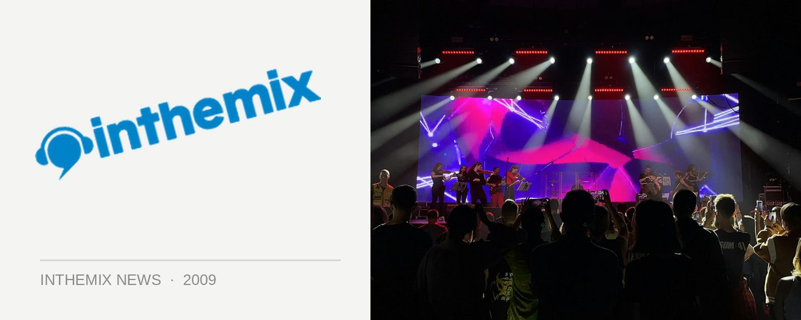

ITM Exclusive: Prins Thomas for Sydney's Playground Weekender
The three-day camping experience that is Sydney’s Playground Weekender has become one of Australia’s favourite boutique festivals, and ITM has got the good word that Cosmic Disco icon Prins Thomas will be there for this year’s extended four-day frivolities. You can be sure he’s set to play another series of gigs around the country, and he also joins another exciting leak that’s swept rock fans into a frenzy, none other than the hell-raising Brian Jonestown Massacre.
The nu-disco sound has really busted out and taken hold in 2009, but several years ago it was Prins Thomas along with fellow Norweigans Lindstrom and Todd Terje who were showing the way forward. ‘Disco’ may be the operative word here, but he’s equally influenced by the spacey sounds of psychadelia. Just check out any of his collaborations with the afore mentioned Lindstrom for the chance to take a spaced-out trip into the ether.
He’s sure to be the first of an impressive posses of DJ/producers, with the festival in the past including underground heavyweights like Ben Watt, Tiefschwarz, Steve Bug, Nic Fanciulli, Laurent Garnier and heaps more. If you’re hanging to find out who they might be, make sure you’re back at the site on Friday 6th November as we’ll have the full Playground Weekender lineup for you to check out.
Playground Weekender takes over Del Rio Resort at Wisemans Ferry, NSW, from 18 to 21 February 2010. Tickets on sale now, stay tuned for more details!